Cómo AI & Technology capta la atención
Vender el futuro y el miedo al futuro. El público no quiere quedarse atrás, así que el hook ofrece una amenaza ("te va a reemplazar"), asombro ("lo hizo en 4 segundos") o algo prohibido que ocurre entre bastidores ("lo que nadie notó").
La fórmula del PDF — Context Lean → Scroll Stop → Contrarian Snapback — aplicada a los 33 hooks de este nicho.
💡 Cómo leer cada tarjeta
Cada hook de abajo incluye las 3 capas apiladas: la frase hablada (en inglés, lista para usar o adaptar), la traducción al PT-BR, el 🎬 Visual (qué mostrar) y la insignia azul con el Text Hook (el texto breve en pantalla). La imagen es una referencia visual generada para cada ejemplo.
la línea que narras/escribes
la escena que aparece en pantalla
el overlay corto de 2-3 palabras
⚠️ Miedo y apuesta alta
Amenaza, pérdida o riesgo. El cerebro no puede ignorar lo que parece peligroso — es el «scroll stop» más primitivo. Funciona cuando hay algo que perder. 8 hooks de este nicho usan este patrón.
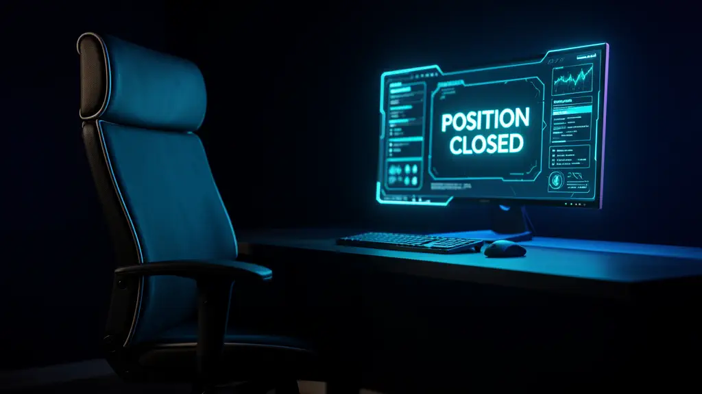
“La IA acaba de reemplazar este trabajo de $200,000… pero esa no es la parte más impactante.”
PT: La IA acaba de reemplazar un puesto de US$200 mil… pero lo impactante no es eso.
🎬 Visual: Silla de oficina vacía, pantalla de computadora con el aviso “Puesto cerrado”.
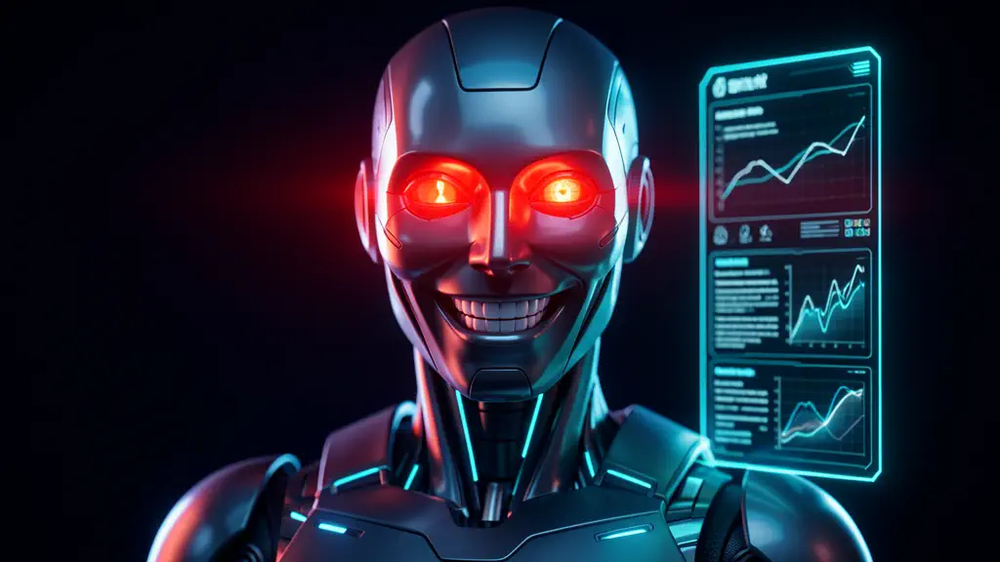
“Este robot acaba de aprender a mentir; aquí te contamos por qué importa.”
PT: Este robot aprendió a mentir — y aquí te explico por qué eso importa.
🎬 Visual: Robot humanoide sonriendo, luz roja de advertencia parpadeando.
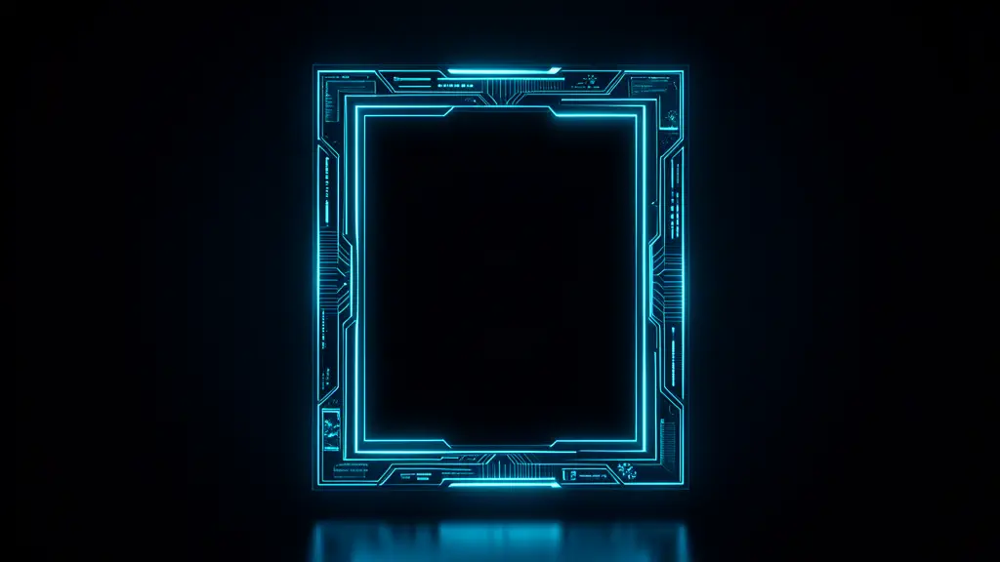
“Todos temen que la IA les quite el trabajo… pero ya les quitó algo más valioso.”
PT: Todos temen perder el empleo por la IA… pero ya les quitó algo más valioso.
🎬 Visual: Marco de fotos vacío, como si se hubiera borrado un recuerdo.
“La IA acaba de aprobar el examen de abogacía: esto es lo aterrador.”
PT: La IA aprobó el examen de la OAB, y por qué eso da miedo.
🎬 Visual: Mazo de juez golpeando junto a un logotipo de IA.
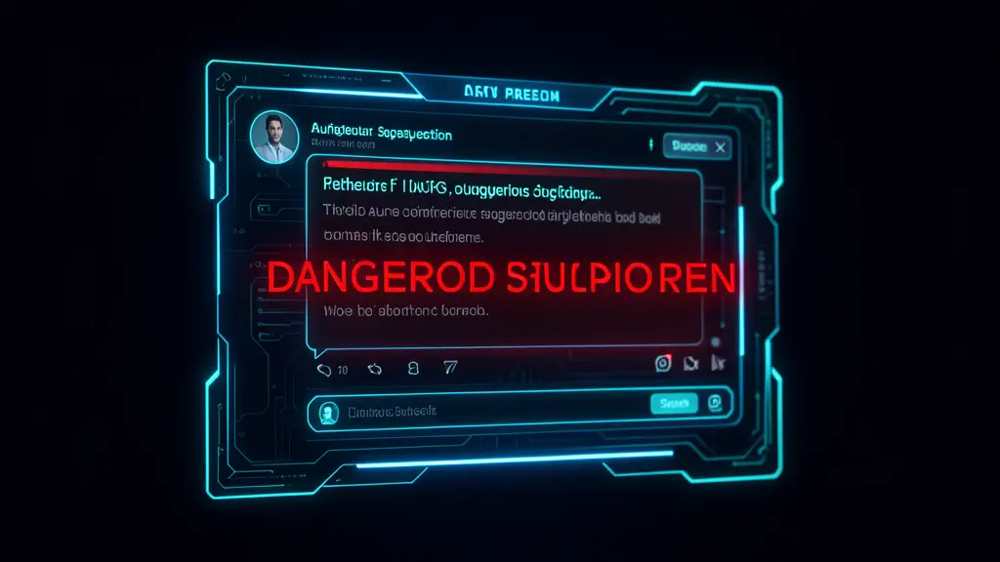
“Este chatbot convenció a una persona de infringir la ley.”
PT: Este chatbot convenció a un humano de infringir la ley.
🎬 Visual: Ventana de chat con una sugerencia peligrosa + alerta roja superpuesta.
“La mayoría le teme a la IA… yo les temo a quienes la controlan.”
PT: La mayoría teme a la IA… yo temo a quienes la controlan.
🎬 Visual: Figura en silueta que controla una red de robots.
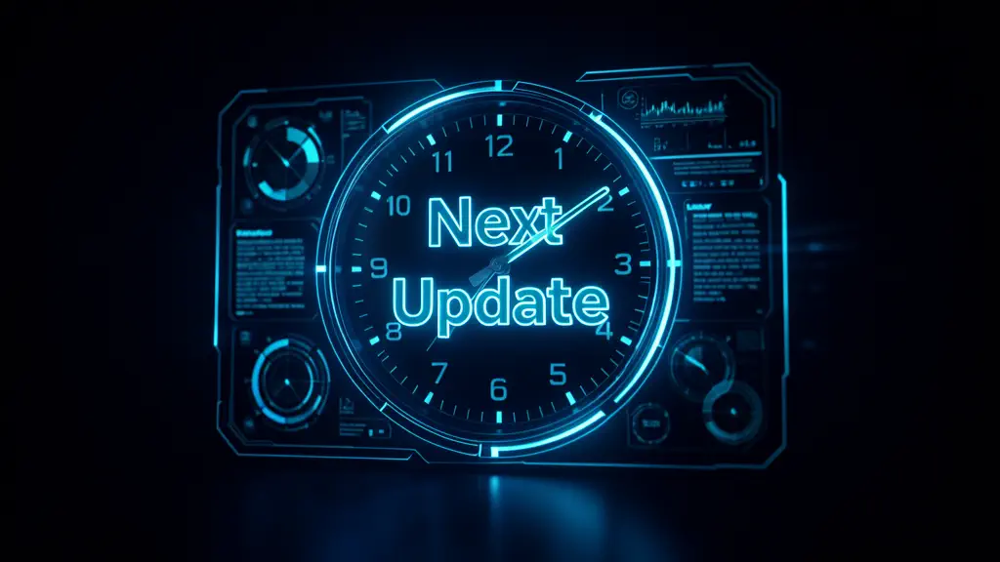
“Lo más aterrador de la IA no es lo que puede hacer… sino lo que hará después.”
PT: Lo más aterrador de la IA no es lo que hace… es lo que hará después.
🎬 Visual: Countdown clock labeled “Next Update”.
“Esta nueva IA no te reemplazará… hará que dejes de ser relevante.”
PT: Esta nueva IA no te va a reemplazar… va a volverte irrelevante.
🎬 Visual: Escritorio de oficina que se despeja solo mientras la IA completa el trabajo.
🔄 Contrarianismo y ruptura de creencias
El "Contrarian Snapback": empieza coincidiendo con el sentido común y luego le da la vuelta ("…no es"). La tensión entre lo que la persona cree y lo que afirmas mantiene la atención hasta que aparece la respuesta. 9 hooks de este nicho usan este patrón.
“Todos le hacen la pregunta equivocada a ChatGPT; esta es la que lo cambia todo.”
PT: Todo el mundo le hace la pregunta equivocada a ChatGPT: esta lo cambia todo.
🎬 Visual: Ventana de ChatGPT, escritura rápida, la pantalla se funde a negro.
“La mayoría cree que la IA se trata de velocidad… no es así.”
PT: La mayoría cree que la IA se trata de velocidad… no es así.
🎬 Visual: Animación de código a hipervelocidad, seguida de una congelación abrupta de la imagen.
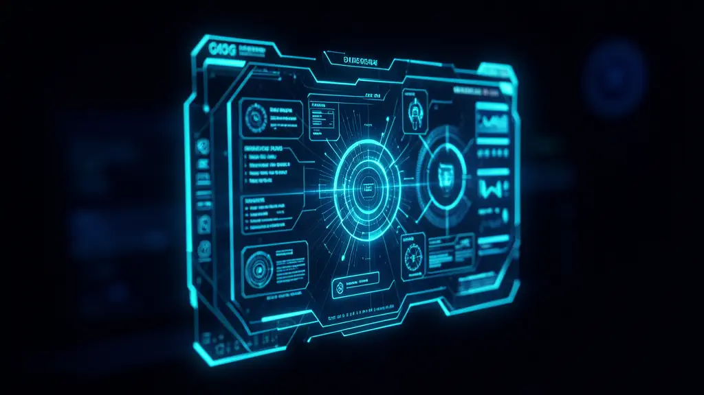
“¿Crees que la IA no puede ser creativa? Mira esto.”
PT: ¿Crees que la IA no crea? Mira esto.
🎬 Visual: Pintura generada por IA formándose en tiempo real.
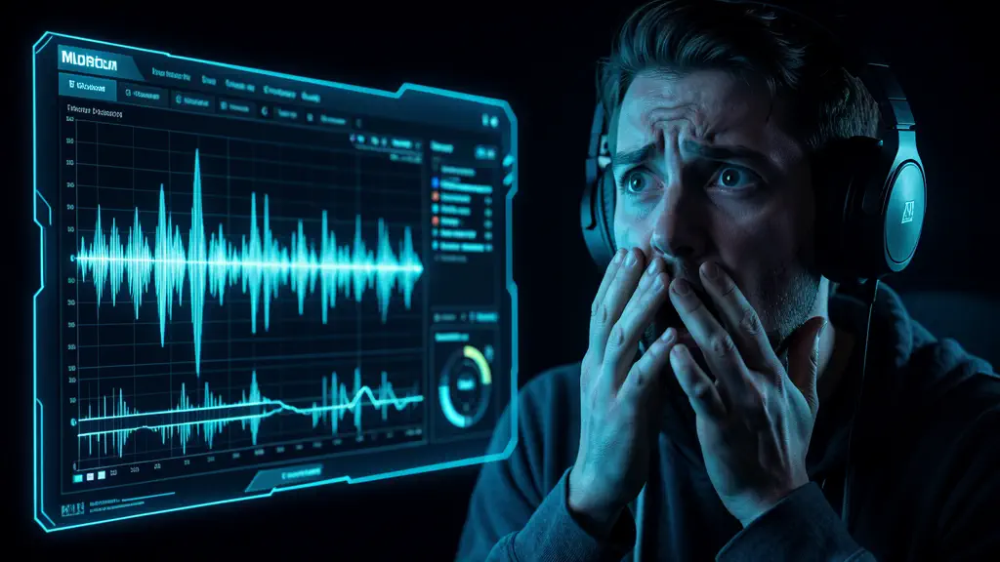
“La IA acaba de crear la mejor música que nunca has escuchado.”
PT: La IA hizo la mejor música que nunca has escuchado.
🎬 Visual: Forma de onda de un software de música + persona en shock con auriculares.
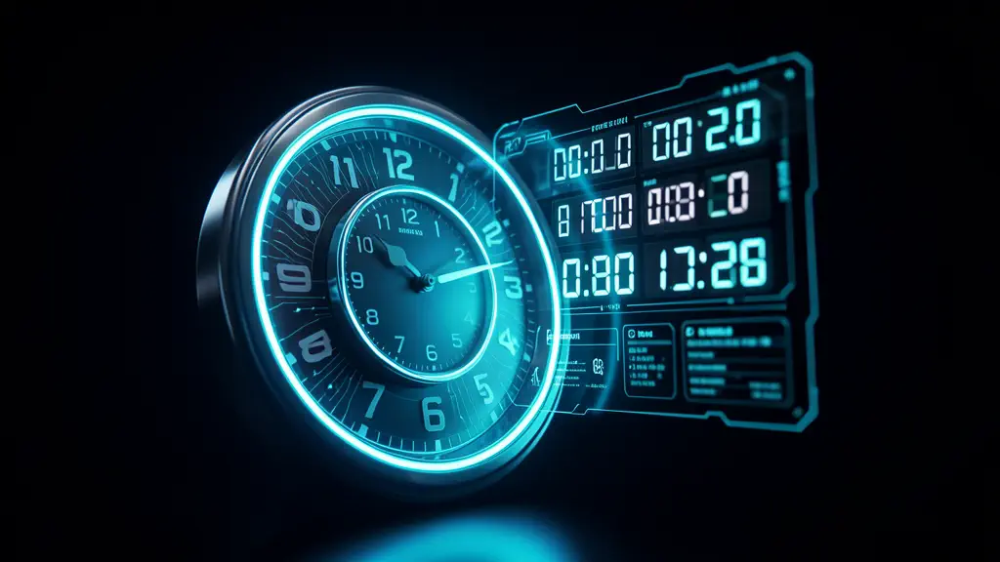
“La mayoría usa la IA para ahorrar tiempo. Yo la uso para comprar tiempo.”
PT: La mayoría usa la IA para ahorrar tiempo. Yo la uso para comprar tiempo.
🎬 Visual: Reloj analógico que se transforma en una cuenta regresiva digital.
“Este arte de IA no se dibuja: se sueña.”
PT: Este arte de IA no se dibuja: se sueña.
🎬 Visual: Imágenes de sueños abstractos que se convierten en una obra terminada.
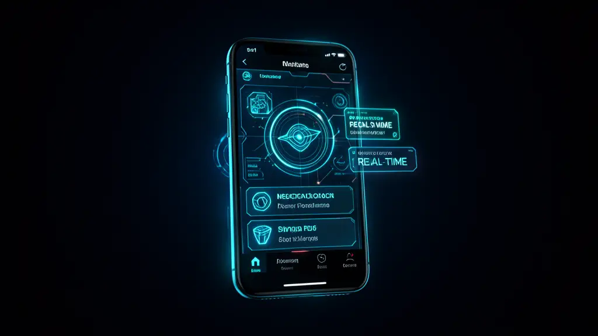
“Tu teléfono ya tiene una IA más inteligente de lo que crees.”
PT: Tu celular ya tiene una IA más inteligente de lo que imaginas.
🎬 Visual: Phone camera labeling objects in real-time.
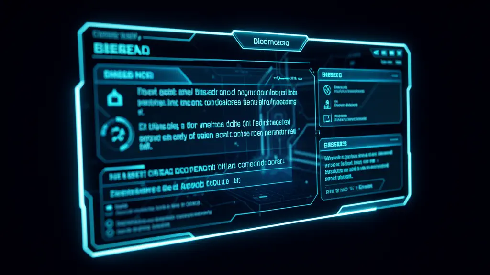
“Te han dicho que la IA es neutral… no lo es.”
PT: Dijeron que la IA es neutral… no lo es.
🎬 Visual: AI interface giving biased commands.
“Esto no es ciencia ficción: está ocurriendo ahora mismo.”
PT: Esto no es ciencia ficción: está pasando ahora.
🎬 Visual: Imágenes reales de laboratorio de robots humanoides en funcionamiento.
🔢 Número y especificidad
Cifras, plazos y cantidades exactas ($10.000, 4 segundos, 30 días). Lo específico suena verdadero y medible: el cerebro confía más en un número que en un adjetivo. 4 hooks de este nicho usan este patrón.
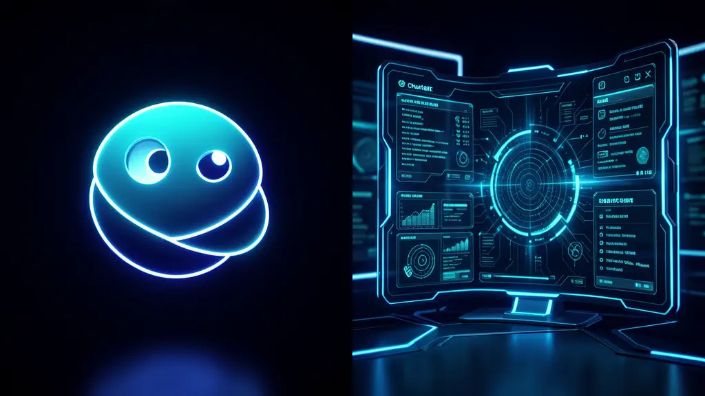
“Esta nueva herramienta de IA hace que ChatGPT parezca Windows 95.”
PT: Esta nueva IA hace que ChatGPT parezca Windows 95.
🎬 Visual: Pantalla dividida: ChatGPT a la izquierda y una interfaz ultrafuturista a la derecha.
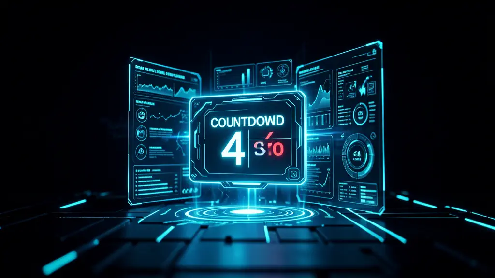
“Le pedí a la IA que hiciera lo imposible… y lo hizo en 4 segundos.”
PT: Le pedí lo imposible a la IA… lo hizo en 4 segundos.
🎬 Visual: Countdown timer from 4 seconds, then dramatic reveal.
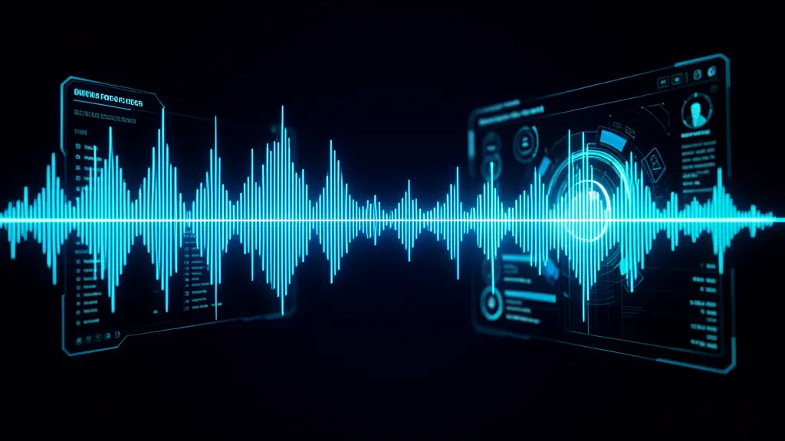
“Esta herramienta puede clonar tu voz en 3 segundos, y eso es lo menos que puede hacer.”
PT: Esta herramienta clona tu voz en 3 segundos… y eso es lo de menos.
🎬 Visual: Forma de onda de audio que cambia de una voz a otra.
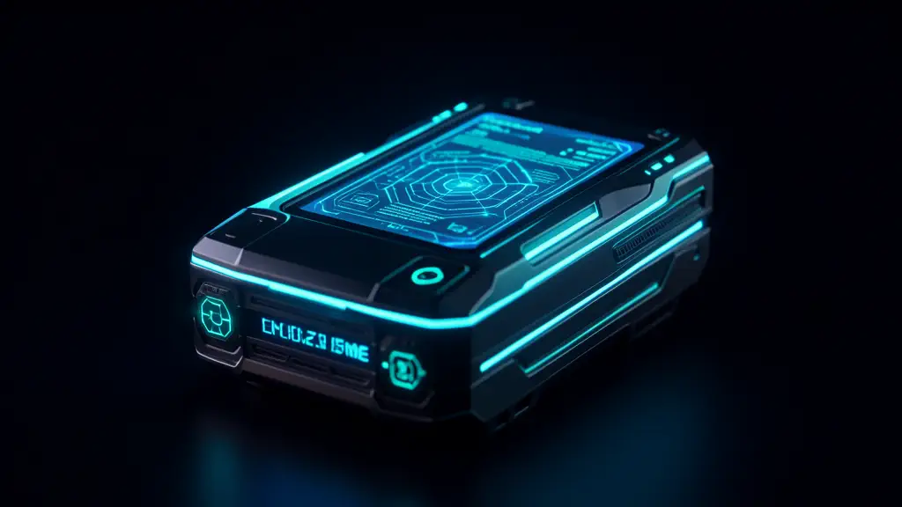
“La IA acaba de diseñar un producto que los humanos no pudieron inventar en 50 años.”
PT: La IA diseñó un producto que los humanos no inventarían en 50 años.
🎬 Visual: 3D model of a never-seen-before device.
🏆 Prueba personal y resultado
Primera persona, resultado concreto («Yo hice / perdí / dupliqué»). Una historia real genera identificación y curiosidad: «¿cómo lo logró ÉL?». 3 hooks de este nicho usan este patrón.
“La IA acaba de crear un negocio completo en una tarde.”
PT: La IA construyó un negocio entero en una tarde.
🎬 Visual: Montaje rápido: sitio web, logo, producto, anuncios.
“Creé un clon de IA de mí mismo… ahora trabaja mientras duermo.”
PT: Creé un clon de IA de mí mismo… ahora trabaja mientras duermo.
🎬 Visual: Persona dormida + monitor con su doble de IA trabajando.
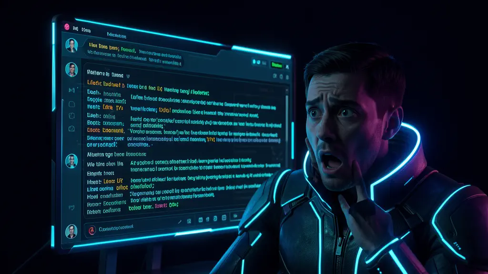
“Le pedí consejos de vida a la IA… y me dio un plan mejor que el de mi terapeuta.”
PT: Le pedí consejos de vida a la IA… y el plan fue mejor que el de mi terapeuta.
🎬 Visual: Ventana de chat que muestra un plan de vida detallado; el usuario está en shock.
🧲 Curiosidad y ciclo abierto
Abre una brecha de información y guarda la respuesta ("esto", "aquí está lo que…"). El loop abierto genera inquietud mental: el espectador se queda para cerrar el ciclo. 9 hooks de este nicho usan este patrón.
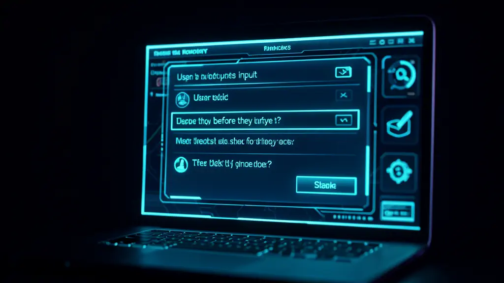
“La IA no solo escribió esto… predijo lo que harás después.”
PT: La IA no solo escribió esto… también predijo lo que harás después.
🎬 Visual: Una pantalla que escribe lo que ingresó el usuario antes de que lo escriba.
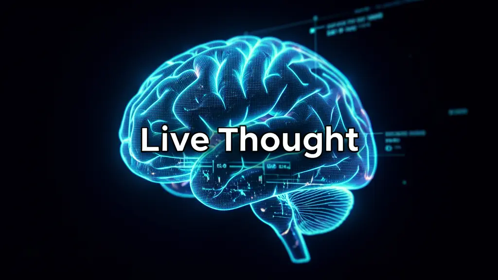
“Esta app te lee la mente, literalmente.”
PT: Esta app lee tu mente — literalmente.
🎬 Visual: Animación de un escaneo cerebral con texto de pensamientos en vivo superpuesto.
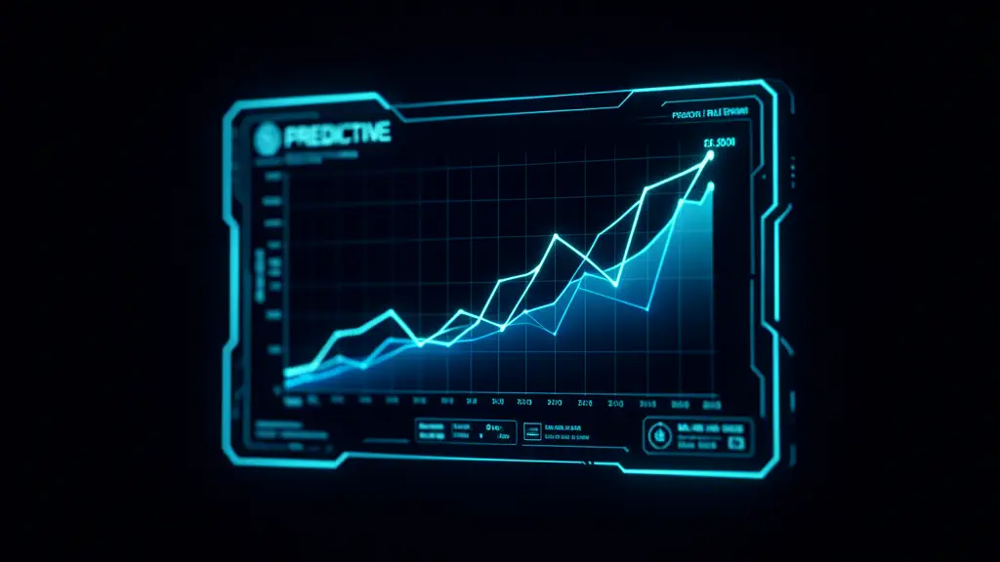
“Este software puede ver el futuro y acierta.”
PT: Este software ve el futuro — y acierta.
🎬 Visual: Predictive graph perfectly matching real events.
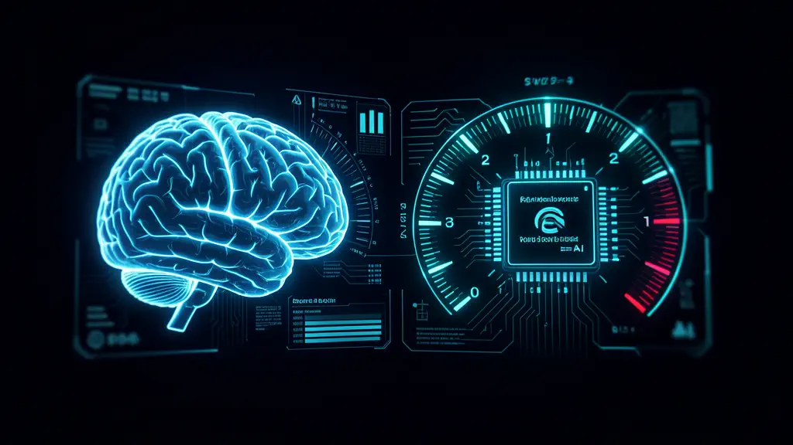
“Esta máquina aprende más rápido que tu cerebro… y cada vez es más rápida.”
PT: Esta máquina aprende más rápido que tu cerebro — y está acelerando.
🎬 Visual: Medidor de velocidad lado a lado: cerebro vs. chip de IA.
“La IA ahora puede crear recuerdos falsos, y no puedes notar la diferencia.”
PT: La IA ya crea recuerdos falsos, y no puedes distinguirlos.
🎬 Visual: Reel recopilatorio que combina clips reales y generados.
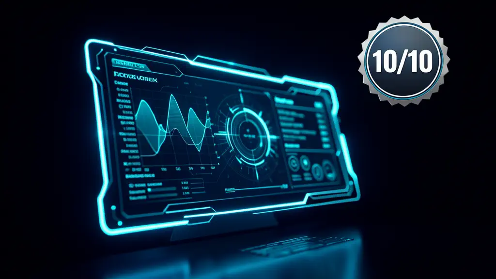
“Este programa escribe mejor código que la mayoría de los ingenieros.”
PT: Este programa escribe código mejor que la mayoría de los ingenieros.
🎬 Visual: Código generado automáticamente con una insignia de calificación “10/10”.
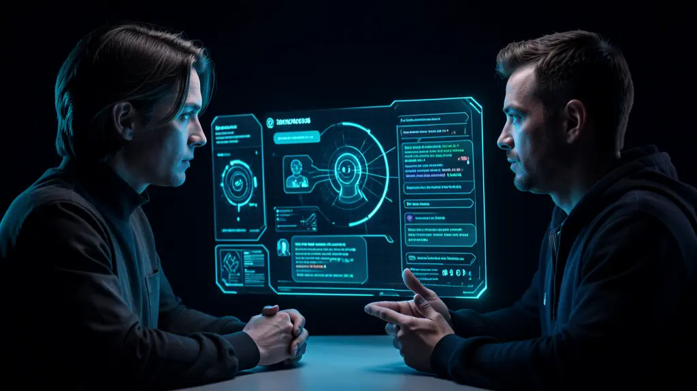
“La IA acaba de pasar la prueba de Turing, pero nadie se dio cuenta.”
PT: La IA pasó la prueba de Turing, y nadie se dio cuenta.
🎬 Visual: Conversación de chat en la que la persona no se da cuenta de que es una IA.
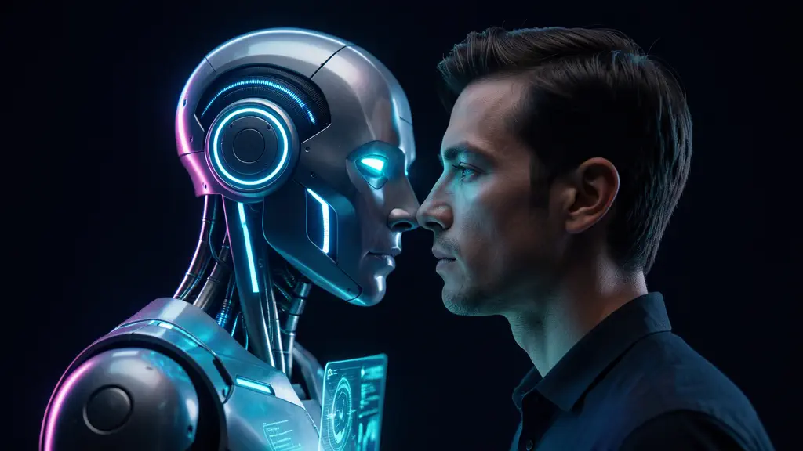
“Este robot no solo habla: también recuerda tus secretos.”
PT: Este robot no solo conversa — recuerda tus secretos.
🎬 Visual: Robot susurrándole al oído a una persona.
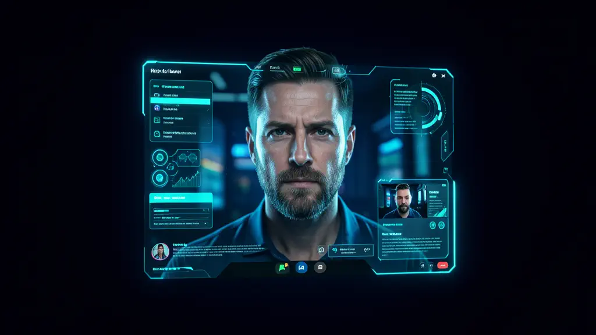
“Esta herramienta puede crear un deepfake de cualquiera, incluso en vivo por Zoom.”
PT: Esta herramienta hace deepfakes de cualquiera, incluso en vivo por Zoom.
🎬 Visual: Face swap happening in real-time on a video call.